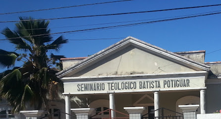

Mais de 500 alunos formados
Aulas EAD
Via Plataforma Educacional do STBP
Tenha flexibilidade para acompanhar seu curso sem perder o conteúdo.
Fóruns teológicos
Participe de fóruns dinâmicos e debates enriquecedores.
Equipes
qualificadas
Aprenda com professores comprometidos e competentes.
Multidisciplinar
Currículo abrange diversas disciplinas para sua formação.
Matricule-se para viver uma incrível jornada de aprendizagem teológica!
Curso de Formação Ministerial e Teologia
O curso pleno em teologia e formação ministerial oferecido pelo Seminário Teológico Batista Potiguar (STBP) é uma oportunidade excepcional para explorar profundamente os ensinamentos bíblicos e teológicos em um ambiente acolhedor e acadêmico. Com uma abordagem que valoriza tanto a teoria quanto a prática, os estudantes têm acesso a um currículo abrangente que aborda temas essenciais como hermenêutica, teologias sistemáticas e bíblica, missões, plantação de igreja, história da igreja e ministério pastoral.
Saiba mais
Academia Missionária CBNR
Formar e atualizar missionários batistas comprometidos com a proclamação do evangelho...
Saiba maisEvangelismo, Discipulado e Crescimento de Igreja
A missão da igreja está fundamentada no mandamento de Cristo de fazer discípulos...
Educação cristã
Capacita líderes para estabelecer Escolas Bíblicas e projetos de discipulado...
Aprofunde sua Fé, Transforme seu Chamado
O Seminário Teológico Batista Potiguar possui o selo ABIBET e oferece uma base teológica firme para que você cresça no conhecimento da Palavra e no serviço cristão.
Saiba mais

Conteúdos bíblicos e teológicos para fortalecer sua jornada de fé e estudo.
O Discipulado Relacional na Igreja Local
A essência do discipulado não se resume a um curso ou sala de aula, mas a um relacionamento intencional que visa o crescimento espiritual mútuo. Na prática, como aplicar os princípios do discipulado relacional em nossa igreja e viver o verdadeiro corpo de Cristo?
Ler maisComo a Igreja Pode Evangelizar em Tempos Digitais
A internet revolucionou a comunicação e abriu novas portas para a missão. O evangelismo em tempos de redes sociais exige intencionalidade, linguagem clara e o uso das ferramentas digitais para levar a mensagem de salvação a um mundo conectado.
Ler mais